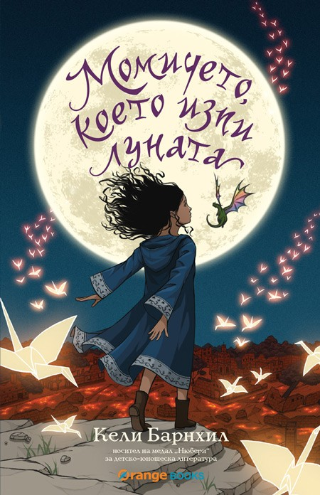

“Момичето, което изпи луната” на Кели Барнхил е вълшебна комбинация от класическа детска приказка, магия, подобна на усещането
от Хари Потър, и шантави персонажи в стил Пратчет.
Слабостта ми към детските книжки за пореден път ме тласна да прочета импулсивно книга, която ме грабна от първата страница.
Историята се развива в подножието на един дремещ вулкан, който от време на време “изръмжава”
и напомня на хората за себе си. Населението е разпределено между Свободните градове, които са
обвити от щастие, и Протекторатът, тънещ в мъгла от тъга и нещастие. Причината за тази тягостност
е Денят на жертвоприношението, на който ежегодно най-малкото към момента дете бива изоставено
в гората като дар към Вещицата. Отделно от обикновените хора живеят Зан, Глърк, Фириан и Луна.
Глърк е блатно чудовище, поет и грижовен приятел и той е по-стар от всички и всичко, защото “в
началото бе блатото“. Зан е вещица на поне 5 000 години и е нещо като добрата фея между Протектората
и Свободните градове. Фириан е един от най-любимите ми герои – той е Просто огромен дракон с
размерите на гълъб. Ако ви разкажа (повече) за главната героиня Луна, ще ви разваля удоволствието
от прочитането. Ще кажа само, че отнета от майка си насила и изоставена в гората, тя се озовава
сред обитателите на гората и израства обградена от много любов. Но (винаги има поне едно но)
ѝ предстоят много открития, приключения и разкриване на дълго пазени тайни.
“Момичето, което изпи луната” е увлекателно приключение, изпъстрено с много герои, злодеи и магия. Книжката е подходяща за
дечица, които могат и сами да си я прочетат, но и за големите, криещи в себе си по едно непораснало
дете.